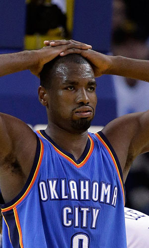

|  |
Матчи |
64 |
|
Передачи (всего/среднее) |
56 |
0.9 |
| В основе |
64 |
|
Подборы в защите (всего/среднее) |
363 |
5.7 |
| Время (всего/среднее) |
2115:46 |
33:04 |
Подборы в атаке (всего/среднее) |
135 |
2.1 |
| Очки (всего/среднее) |
917 |
14.3 |
Подборы (всего/среднее) |
498 |
7.8 |
| 2-очковые броски (всего/среднее) |
297/581 |
4.6/9.1 |
Перехваты (всего/среднее) |
30 |
0.5 |
| 2-очковые броски (% реализации) |
51.1% |
|
Потери (всего/среднее) |
97 |
1.5 |
| 3-очковые броски (всего/среднее) |
77/205 |
1.2/3.2 |
Блокшоты (всего/среднее) |
154 |
2.4 |
| 3-очковые броски (% реализации) |
37.6% |
|
Блокшоты соперника (всего/среднее) |
26 |
0.4 |
| Штрафные броски (всего/среднее) |
92/110 |
1.4/1.7 |
Фолы (всего/среднее) |
194 |
3 |
| Серж Ибака |
Штрафные броски (% реализации) |
83.6% |
|
Коэффициент полезности (всего/среднее) |
908 |
14.2 |